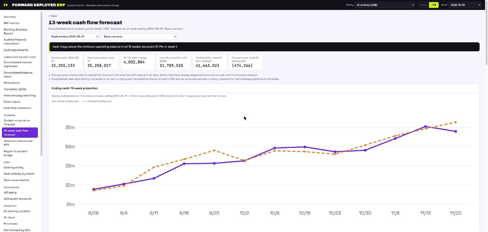
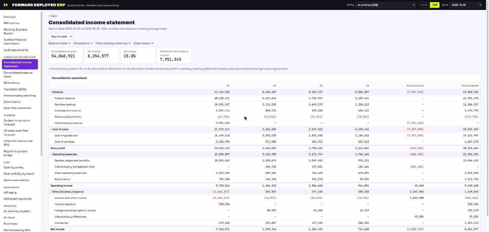
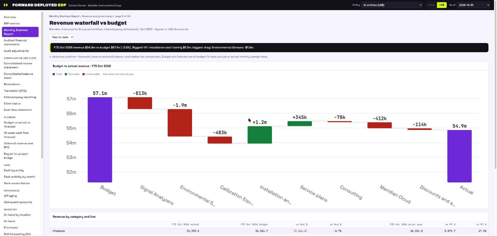
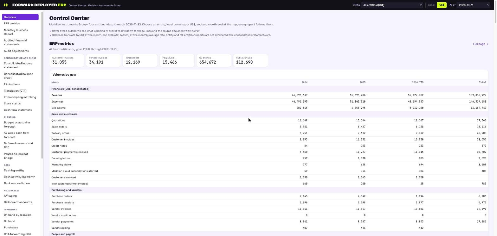

A whole company.
Live on a real ERP.
Control Center is the finance command center for Meridian Instruments Group, a four-entity instruments company running on a real ERPNext system of record since January 2024. Consolidation, close, a monthly business report, audited statements and cash forecasting, with every number drilling down to the document behind it.

The month-end package, always current
Four currencies, one set of numbers
Translation at average, closing and historical rates with a CTA roll-forward, intercompany matching and eliminations (including unrealized profit in inventory), consolidated statements and a close-status board.
A 49-page monthly business report
Financial summary, KPI scorecard, revenue and margin walks, EBITDA bridges, functional spend, bookings and pipeline, cash and working capital, outlook. It reads like the deck a CFO takes to the board.
Audited-style US GAAP statements
FY2024, FY2025 with comparatives, and a nine-month interim. All four statements, two-class EPS with the share-count math, full footnotes, and a log of every audit adjustment booked.
Budget, reforecasts and a 13-week cash flow
Budget against 3+9, 6+6 and 9+3 reforecasts in constant currency. A direct-method 13-week cash forecast by entity or consolidated, rebuilt as of any past week and scored against what actually happened.
Every number opens to its source
Hover any amount for what's behind it. Click through to the GL lines, the invoice, payroll run or bank payment, and the scanned source PDF attached in the ERP.



Real systems, a synthetic company
ERPNext with HR and payroll
Open-source ERP, self-hosted. Order-to-cash, procure-to-pay, inventory, projects and timesheets, payroll with real tax tables, fixed assets, leases and debt, with periods closed month by month.
A generator that plays customers, vendors and staff
Deterministic from a seed, so the whole company rebuilds from scratch. It posts the daily rhythm of a real business, from orders, shipments and payments to payroll, expense reports and month-end entries, and renders the source documents: customer POs, vendor invoices in each vendor's own layout, receipts.
An hourly mirror, reconciled to the ledger
An incremental extract lands the GL, subledgers and master data in Postgres every hour and checks that mirror totals match the ERP. The consolidation engine and every report run there.
Read-only, open to anyone
Control Center is published read-only through a Cloudflare Tunnel: no login, nothing can be changed, and no path back into the ERP.
Meridian Instruments Group is fictional, and every customer, vendor, employee and number in it is synthetic. No client data is used anywhere in this build.